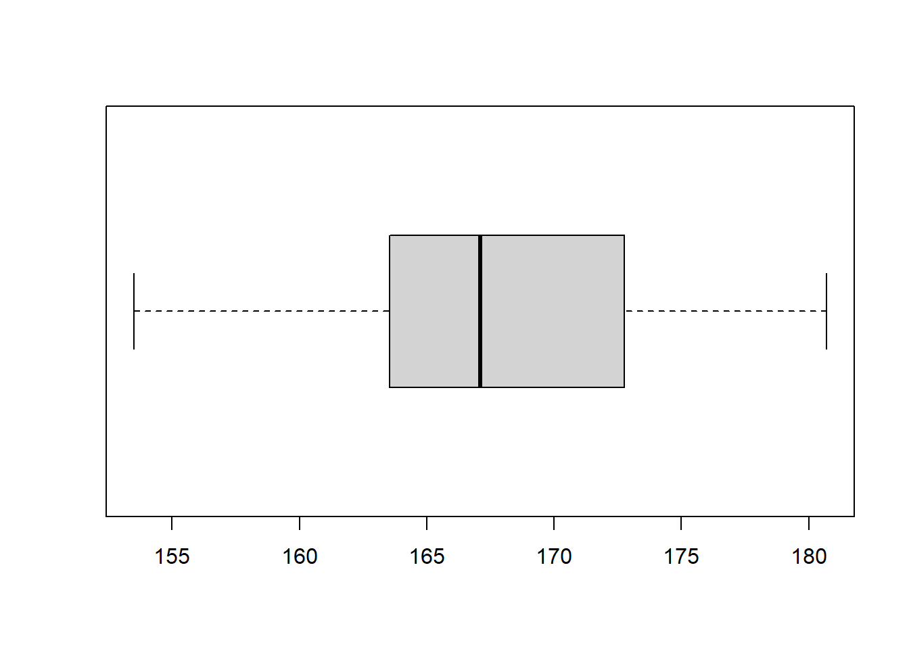

7 Eksplorasi dan Visualisasi
Ketika berbicara tentang data, langkah pertama yang sangat penting adalah memahami data tersebut dengan baik. Sebelum kita mulai menarik kesimpulan atau membangun model, kita harus melihat data secara mendalam—memahami distribusi, tren, pola, atau bahkan anomali yang ada di dalamnya. Di sinilah eksplorasi data berperan. Eksplorasi data atau Exploratory Data Analysis (EDA) adalah proses awal dalam analisis data yang berfokus pada pemahaman karakteristik dasar dari dataset. Dengan teknik ini, kita bisa lebih peka terhadap pola-pola yang mungkin tersembunyi, serta menilai asumsi-asumsi awal yang bisa kita gunakan dalam analisis lebih lanjut.
Eksplorasi data tidak hanya berhenti pada angka-angka. Kadang, angka saja tidak cukup untuk memberikan gambaran lengkap tentang data. Oleh karena itu, visualisasi memainkan peran krusial. Visualisasi data memungkinkan kita untuk mengubah angka menjadi gambar yang lebih mudah dipahami dan ditangkap oleh otak manusia. Misalnya, dengan menggunakan grafik seperti histogram, boxplot, atau scatter plot, kita dapat melihat distribusi dan hubungan antar variabel dengan lebih jelas. Visualisasi yang baik bisa membantu kita mengidentifikasi tren atau korelasi yang mungkin terlewat jika hanya berfokus pada angka.
Sebagai seorang data analyst, kemampuan untuk melakukan eksplorasi data dan menciptakan visualisasi yang informatif sangat penting. Visualisasi yang tepat bukan hanya untuk analisis pribadi, tetapi juga sangat berguna ketika kita ingin menyampaikan hasil analisis kepada audiens yang lebih luas, termasuk mereka yang mungkin tidak memiliki latar belakang teknis. Seorang data analyst yang baik adalah yang mampu menceritakan cerita di balik data melalui visualisasi yang sederhana namun kuat.
7.1 Teknik Eksplorasi Data
Eksplorasi data melibatkan beberapa teknik yang cukup sederhana namun efektif. Teknik-teknik ini biasanya dimulai dengan perhitungan statistik dasar seperti mean, median, mode, varians, dan standar deviasi untuk mendapatkan gambaran awal tentang distribusi data. Misalnya, jika kita memiliki dataset yang berisi tinggi badan sekelompok orang, langkah pertama yang bisa dilakukan adalah menghitung rata-rata dan standar deviasinya.
Dari sini, kita bisa mengetahui apakah tinggi badan rata-rata kelompok tersebut tinggi atau rendah, serta seberapa besar penyebaran data tersebut. Selain itu, kita juga bisa mencari nilai ekstrim atau pencilan (outlier) yang mungkin ada dalam data. Outlier ini bisa menjadi tanda adanya kesalahan dalam pengumpulan data atau justru merupakan indikasi fenomena khusus yang perlu ditelusuri lebih lanjut.
Teknik eksplorasi data adalah metode yang digunakan untuk memahami dan menganalisis data secara awal, sebelum menerapkan model statistik atau machine learning. Berikut adalah beberapa jenis teknik eksplorasi data yang umum digunakan:
Statistik Deskriptif
Teknik ini melibatkan perhitungan nilai-nilai statistik seperti rata-rata, median, modus, standar deviasi, dan berbagai ukuran dispersi lainnya. Statistik deskriptif membantu merangkum dan memahami distribusi data, menyajikan informasi tentang karakteristik penting data secara numerik.Visualisasi Data
Visualisasi digunakan untuk menampilkan data dalam bentuk grafis, sehingga pola dan tren bisa lebih mudah dipahami. Beberapa visualisasi umum termasuk histogram, boxplot, scatter plot, heatmap, dan bar chart. Teknik ini sangat efektif untuk menemukan outlier, distribusi data, dan hubungan antar variabel.Tabulasi Silang (Crosstabulation)
Teknik ini digunakan untuk menganalisis hubungan antara dua variabel kategorikal dengan menampilkan data dalam bentuk tabel kontingensi. Ini membantu dalam memahami interaksi atau pola yang ada antara variabel-variabel tersebut.Analisis Korelasi
Korelasi digunakan untuk menentukan hubungan linier antara dua variabel numerik. Koefisien korelasi Pearson adalah salah satu metode yang paling umum digunakan untuk mengukur seberapa kuat hubungan antar variabel. Korelasi dapat membantu mengidentifikasi variabel yang saling mempengaruhi.Deteksi Outlier
Teknik ini digunakan untuk mengidentifikasi data yang jauh menyimpang dari mayoritas data lainnya. Outlier dapat memberikan informasi penting tentang kemungkinan kesalahan data, peristiwa langka, atau aspek yang perlu dianalisis lebih lanjut.Analisis Dimensi dan Reduksi Dimensi
Ketika bekerja dengan data yang memiliki banyak fitur, reduksi dimensi seperti Principal Component Analysis (PCA) dapat membantu mengurangi kompleksitas data sambil mempertahankan informasi yang paling penting. Teknik ini berguna untuk mengidentifikasi pola dalam data berdimensi tinggi.Grouping atau Clustering
Clustering seperti K-Means atau DBSCAN adalah teknik yang digunakan untuk mengelompokkan data ke dalam beberapa grup berdasarkan kesamaan. Ini berguna dalam eksplorasi data yang tidak berlabel untuk menemukan kelompok atau segmen alami dalam data.
7.2 Jenis-jenis Visualisasi Statistik
Ada berbagai jenis visualisasi yang bisa digunakan tergantung dari tipe data dan tujuan analisis yang ingin dicapai. Beberapa visualisasi dasar yang sering digunakan dalam eksplorasi data antara lain:
7.2.1 Histogram
Histogram Sangat berguna untuk melihat distribusi data kontinu. Histogram memecah data menjadi beberapa “bin” atau kelompok interval, dan memberikan gambaran tentang frekuensi data pada masing-masing kelompok. Misalnya, jika kita ingin mengetahui bagaimana distribusi penghasilan bulanan di suatu perusahaan, histogram dapat membantu kita melihat rentang penghasilan yang paling umum.
Ingat!
Histogram hanya bisa digunakan untuk memvisualisasikan data numerik, tidak bisa untuk data kategorik. Untuk memvisualisasikan data kategorik kamu dapat menggunakan Bar chart (diagram batang) atau pie chart (diagram lingkaran)
Informasi atau insight yang dapat diperoleh dari histogram antara lain:
- Mengetahui bentuk sebaran dan ukuran pemusatan data kontinu dengan cepat. Bentuk sebaran data dapat berupa simetrik, seragam, bimodal, menjulur ke kanan atau ke kiri.
- Mengetahui rentang nilai data dengan mudah karena kita dapat langsung melihat nilai terendah dan tertinggi. Batang histogram menunjukkan banyaknya data yang berada pada rentang tersebut. Semakin tinggi batangnya maka semakin banyak data pada rentang tersebut.
- Mengidentifikasi outlier pada data. Jika ada batang yang berada jauh atau terpisah dari batang histogram yang lain maka dapat dicurigai bahwa data tersebut adalah outlier.
Dari contoh histogram di atas kita dapat mengetahui bahwa sebaran data tersebut hampir simetrik. Tetapi karena ada nilai data yang jauh lebih besar dari nilai pada umumnya, sehingga menyebabkan sebarannya sedikit menjulur ke kanan(skewed to the right). Data yang jauh ini kita dapat mencurigainya sebagai pencilan/outlier. Outlier tersebut bernilai antara 205 hingga 210 cm.
Kita perlu mengetahui rentang nilai yang dimiliki oleh masing-masing batang. Diantara nilai 160 hingga 170 terdapat 5 batang, sehingga rentang batang adalah (170-160)/5 = 2 cm. Lebar rentang ini sama untuk semua batang. Jadi untuk rentang batang dari 160 sampai 170 cm adalah [160, 162], [162, 164], [164, 166], [166, 168], dan [168, 170]. Oleh karena itu kita dapat menyimpulkan bahwa rentang nilai terbanyak pada data tersebut adalah [168, 170] cm karena batangnya yang paling tinggi. Jika kita mengabaikan outlier, maka nilai rata-rata dan median dari data ini sekitar 168 cm.
Contoh pembuatan histogram berikut ini akan membantu kamu dalam memahami bagaimana histogram bekerja dan interpretasinya. Tentu saja ketika kamu bekerja sebagai data analyst tidak perlu menghitung manual. kamu dapat menggunakan software untuk mempercepat pekerjaan kamu.
Misalnya, kita memiliki data tinggi badan dari 20 orang (dalam cm):
180.7, 167, 166.9, 153.5, 164.8, 167.2, 174.3, 164.4, 162.7, 158.8, 169.8, 177.5, 164.4, 170.7, 176.2, 168.6, 178.8, 162, 160.2, 171.2.
Maka kita tahu bahwa \(n = 20\).
-
Tentukan rentang kelas
Rentang (\(r\)) kelas dapat diperoleh dengan cara mengurangi nilai terbesar dan terkecil. Pada contoh data ini nilai terbesar adalah 180.7 dan nilai terkecil adalah 153.5.\[ \begin{align*} r & = \lceil max - min \rceil \\ & = \lceil 180.7 - 153.5 \rceil \\ & = \lceil 27.2 \rceil \\ r & = 28 \end{align*} \]
-
Menentukan jumlah kelas (binning)
Penentuan jumlah kelas (\(k\)) dalam pembuatan histogram dapat dipilih berdasarkan keinginan pembuat histogram atau menggunakan aturan yang sudah dibuat. Penentuan jumlah kelas berdasarkan keinginan pembuatnya misalnya dengan menentukan \(k\) sebanyak 5, 6, 7, dan seterunya. Penentuan jumlah kelas yang digunakan di software seperti R atau Python secara default menggunakan aturan yang sudah ada seperti yang diusulkan oleh H.A Sturges, DP Doane, Freedman-Diaconis, dan lain-lain. Untuk contoh ini kita akan menggunakan aturan Sturges dengan formula \[ k = \lceil 1 + \log_2(n) \rceil \] Maksud dari simbol \(\lceil \rceil\) adalah hasil perhitungan dibulatkan ke atas (ceiling). Karena kita memiliki \(n = 20\) maka\[ \begin{align*} k & = \lceil 1 + log_2(n) \rceil \\ & = \lceil 1 + log_2(20) \rceil \\ & = \lceil 1 + 4.322 \rceil \\ & = \lceil 5.322 \rceil \\ k & = 6 \\ \end{align*} \]
kita dapat menggunakan $ k = 6$ untuk pembuatan histogram ini. Artinya akan ada 6 batang yang terbentuk.
-
Menghitung lebar kelas
Kita dapat menghitung lebar kelas atau lebar batang histogram (\(L\))dengan\[ L = \frac{r}{k} = \frac{28}{6} = 4.66667 \approx 5 \]
-
Membuat batas kelas Batas kelas adalah rentang nilai yang nantinya akan mengandung nilai data dari masing-masing kelas. Karena nilai terkecil pada data di atas adalah min = 153.5 dan lebar kelas adalah L = 5. maka batas kelas pertama adalah \(min + L\) = \(153.5 + 5 = 158.5\). Kita dapat melakukan cara yang sama untuk batas kelas selanjutnya hingga terbentuk 5 kelas.
\[ \begin{align*} \text{Batas kelas 1: } &= 153.5 + 5 = 158.5, [153.5, 158.5) \\ \text{Batas kelas 2: } &= 158.5 + 5 = 163.5, [158.5, 163.5) \\ \text{Batas kelas 3: } &= 163.5 + 5 = 168.5, [163.5, 168.5) \\ \text{Batas kelas 4: } &= 168.5 + 5 = 173.5, [168.5, 173.5) \\ \text{Batas kelas 5: } &= 173.5 + 5 = 178.5, [173.5, 178.5) \\ \text{Batas kelas 6: } &= 178.5 + 5 = 183.5, [178.5, 183.5] \\ \end{align*} \]
-
Membuat tabel frekuensi
Tabel frekuensi adalah sebuah tabel yang memberikan informasi banyaknya kemunculan dari setiap nilai atau kelompok nilai.Kelas Batas Kelas frekuensi (fi) 1 [153.5, 158.5) 1 2 [158.5, 163.5) 4 3 [163.5, 168.5) 6 4 [168.5, 173.5) 4 5 [173.5, 178.5) 3 6 [178.5, 183.5] 2 Total dari frekuensi tersebut jika dijumlahkan adalah 20 dan sesuai dengan \(n\) di awal, semua data masuk ke setiap kelas dan tidak ada nilai yang terhimpit diantara dua kelas.
Menggambar histogram
Selanjutnya membuat batang histogram dengan batas kelas berada di sumbu X (horizontal) dan frekuensi di sumbu Y (vertikal). Tinggi batang menyesuaikan dengan nilai frekuensi pada setiap kelas. Histogram akan terlihat seperti berikut ini.
7.2.2 Density
Density plot merupakan salah satu metode yang sering digunakan untuk visualisasi distribusi data numerik. Berbeda dengan histogram yang memecah data ke dalam interval atau bin, density plot menampilkan estimasi smooth (halus) dari sebaran peluang variabel numerik. Estimasi ini biasanya diperoleh menggunakan metode Kernel Density Estimation (KDE). Bentuk sebaran data dengan histogram sangat bergantung pada banyaknya kelas dalam membentuk sebaran data. Dengan density plot, kita bisa lebih mudah melihat pola sebaran data dan membandingkan sebaran antar kelompok yang berbeda dalam data.
Density plot sangat berguna dalam tahap eksplorasi data, terutama ketika kita ingin mengetahui bentuk sebaran (apakah normal, skewed, atau bimodal), dan mengidentifikasi kemungkinan outliers (nilai yang berada jauh dari mayoritas data). Dengan tampilan yang lebih halus daripada histogram, density plot memudahkan kita untuk mengenali pola sebaran dengan lebih jelas. Berikut ini contoh visualisasi density plot dari sebuah pengukuran jarak yang dapat ditempuh oleh 32 jenis kendaraan sehingga dapat diperoleh hasil rata-rata jarak tempuh dalam mil per galon.
Dalam Matematika dan Statistika
Untuk membuat sebuah density plot dari data empiris kamu memerlukan beberapa langkah yang bisa dibilang cukup rumit bagi orang yang tidak memiliki latar belakang pendidikan matematika/statsitika apalagi yang tidak suka matematika.
Data Sampel
Pertama, kita harus memiliki data sampel terlebih dahulu. Misalnya, sebagai contoh sederhana, kita memiliki data {2, 3, 5, 6, 8}.Memilih Kernel
Kernel adalah fungsi yang digunakan untuk memperkirakan distribusi data di sekitar titik data. Kernel Density Estimation (KDE) yang biasanya digunakan adalah kernel Gaussian. Gaussian Kernel memiliki rumus
\[ K(x) = \frac{1}{\sqrt{2\pi}}e^{-\frac{x^2}{2}} \]
Mirip dengan fungsi sebaran Normal? Ya! Rumus di atas adalah fungsi sebaran Normal dengan \(\mu=0\) dan \(\sigma=1\).
- Memilih Bandwidth
Bandwidth (h) adalah parameter penting dalam KDE yang menentukan lebar kernel akan menyebar di sekitar tiitk setiap titik data. Bandwidth bisa dipilih secara manual atau menggunakan aturan standar, seperti *Silverman’s rule
\[ h = 1.06\sigma n^{-1/5} \]
dengan \(\sigma\) adalah standar deviasi sampel, dan n adalah banyaknya data. Bandwidth menentukan tingkat smoothness dari sebuah density plot. Untuk contoh ini kita gunakan \(h=1\) agar sederhana.
- Menghitung KDE
Density di setiap titik \(x\) dalam rentang yang kita ingin hitung dengan rumus berikut:
\[ \hat{f}\left(x\right)=\frac{1}{nh}\sum_{i=1}^{n}K\left(\frac{x-x_i}{h}\right) \]
dengan
* \(x_i\) adalah titik data ke-\(i\)
* \(h\) adalah bandwidth
* \(K\) adalah kernel (Gaussian)
Kita akan menghitung estimasi KDE secara manual pada beberapa titik \(x\) untuk data sampel kita, misalnya \(x=4\). Untuk \(x=4\) kita hitung KDE dengan rumus: \[ \hat{f}\left(4\right)=\frac{1}{nh}\sum_{i=1}^{n}K\left(\frac{4-x_i}{h}\right) \]
Sekarang kita hitung masing-masing komponen Gaussian untuk setiap titik data.
Untuk \(x_1=2\) \[ \begin{align} K\left(\frac{4-2}{1}\right) &= K(2) \\ &= \frac{1}{\sqrt{2\pi}}e^{-\frac{2^2}{2}} \\ &= \frac{1}{\sqrt{2\pi}}e^{-2} \\ &\approx 0.05399 \\ \end{align} \]
Untuk \(x_2=3\) \[ \begin{align} K\left(\frac{4-3}{1}\right) &= K(1) \\ &= \frac{1}{\sqrt{2\pi}}e^{-\frac{1^2}{2}} \\ &= \frac{1}{\sqrt{2\pi}}e^{-\frac{1}{2}} \\ &\approx 0.24197 \\ \end{align} \]
Untuk \(x_3=5\) \[ \begin{align} K\left(\frac{4-5}{1}\right) &= K(-1) \\ &= \frac{1}{\sqrt{2\pi}}e^{-\frac{(-1)^2}{2}} \\ &= \frac{1}{\sqrt{2\pi}}e^{-\frac{1}{2}} \\ &\approx 0.24197 \\ \end{align} \]
Untuk \(x_4=6\) \[ \begin{align} K\left(\frac{4-6}{1}\right) &= K(2) \\ &= \frac{1}{\sqrt{2\pi}}e^{-\frac{2^2}{2}} \\ &= \frac{1}{\sqrt{2\pi}}e^{-\frac{4}{2}} \\ &\approx 0.05399 \\ \end{align} \]
Untuk \(x_5=8\) \[ \begin{align} K\left(\frac{4-8}{1}\right) &= K(4) \\ &= \frac{1}{\sqrt{2\pi}}e^{-\frac{4^2}{2}} \\ &= \frac{1}{\sqrt{2\pi}}e^{-\frac{16}{2}} \\ &\approx 0.00013 \\ \end{align} \]
Sekarang kita hitung dengan menjumlahkan semuanya
\[ \begin{align} \hat{f}\left(4\right)&=\frac{1}{5\times 1}\sum_{i=1}^{5}K\left(\frac{4-x_i}{1}\right) \\ &= \frac{1}{5}\left( K\left( \frac{4-2}{1}\right) + K\left( \frac{4-3}{1}\right) + \dots + K\left( \frac{4-8}{1}\right) \right) \\ &= \frac{1}{5}(0.05399+0.24197+0.24197+0.05399+0.00013) \\ &\approx 0.11841 \end{align} \]
- Visualisasi
Jika kita ulangi langkah ini untuk berbagai nilai \(x\) dalam rentang data kita, kita bisa mendapatkan kurva smooth yang merepresentasikan density plot secara keseluruhan. Density plot ini akan menunjukkan sebaran dari sampel data kita dengan representasi smooth berdasarkan KDE.
7.2.3 Boxplot
Boxplot atau diagram kotak garis adalah salah satu visualisasi paling populer untuk melihat distribusi data, terutama dalam mengidentifikasi median, kuartil, dan outlier. Dengan boxplot, kita bisa langsung melihat apakah ada data yang jauh lebih besar atau kecil dari yang lain, serta bagaimana rentang data pada 50% tengahnya. Jenis visualisasi ini juga sangat berguna untuk menggambarkan sebaran data dan membandingkan beberapa kelompok data.
Ingat!
Boxplot juga hanya bisa untuk data numerik seperti pada histogram, data kategorik pada boxplot hanya dapat digunakan untuk pengelompokan boxplot.
Dengan menggunakan data pada contoh histogram sebelumnya kita akan membuat boxplot.
-
Hitung nilai \(Q_1\), \(Q_2\) dan \(Q_3\)
Untuk mendapatkan nilai \(Q_1\), \(Q_2\) dan \(Q_3\) kita harus mengurutkan data dari terkecil ke terbesar terlebih dahulu. Data yang sudah diurutkan akan terlihat seperti berikut ini.153.5, 158.8, 160.2, 162, 162.7, 164.4, 164.4, 164.8, 166.9, 167, 167.2, 168.6, 169.8, 170.7, 171.2, 174.3, 176.2, 177.5, 178.8, 180.7
-
\(Q_1\) adalah data pada urutan ke 25%.
-
\(Q_2\) adalah data ke 50% atau tengah-tengah, disebut juga Median atau Nilai Tengah.
- \(Q_3\) adalah data pada uturan ke 75%.
Langkah pertama kita hitung \(Q_2\) karena lebih mudah. Setelah data diurutkan kita bagi dua data sama banyaknya, yaitu
180.7 167 166.9 153.5 164.8 167.2 174.3 164.4 162.7 158.8, dan
169.8 177.5 164.4 170.7 176.2 168.6 178.8 162 160.2 171.2.Karena tidak ada data yang tepat berada di tengah kedua bagian tersebut maka \(Q_2\) adalah rata-rata dari dua data yang paling dekat dengan tengah pembagi tersebut.
\[ \begin{align*} \text{lokasi } Q_2 &= \frac{2\times(n+1)}{4} \\ &= \frac{42}{4} \\ &= 10.5 \end{align*} \]
Artinya nilai \(Q_2\) ada di antara data ke-10 dan ke-11. Oleh karena itu kita perlu menghitung nilai rata-rata dari kedua data tersebut. Data ke-10 adalah 167.0 dan data ke-11 adalah 167.2. Maka \(Q_2\) = (167.0+167.2)/2 = 167.1.
Kita sebut 50% dari data yang nilainya lebih kecil dari \(Q_2\) adalah data sebelah kiri, sedangkan data yang lebih besar dari \(Q_2\) adalah data sebelah kanan. Untuk menghitung nilai \(Q_1\) kita bisa lakukan hal yang sama seperti pada perhitungan \(Q_2\) tapi hanya pada data sebelah kiri. Karena data sebelah kiri ada n_1 = 10 maka
\[ \begin{align*} \text{lokasi } Q_1 &= \frac{n+1}{4} \\ &= \frac{20+1}{4} & \text{(dari seluruh data)} \\ &= 5.25 \end{align*} \]
Kita juga bisa menghitung dari data sebelah kiri, ada \(n_1 = 10\) data.
\[ \begin{align*} \text{lokasi } Q_1 &= \frac{n_1+1}{2} \\ &= \frac{10+1}{2} & \text{(dari data sebelah kiri)} \\ &= 5.5 \end{align*} \]
Dari kedua perhitungan tersebut kita dapat menyimpulkan bahwa nilai \(Q_1\) ada di antara data ke-5 dan ke-6, yaitu 162.7 dan 164.4. Rata-rata dari kedua data tersebut adalah \(Q_1\) = 163.55.
Selanjutnya menghitung \(Q_3\) adalah data pada urutan ke-75% .
\[ \begin{align*} \text{lokasi } Q_3 &= \frac{3\times(n+1)}{4} \\ &= \frac{63}{4} \\ &= 15.75 \end{align*} \]
Atau data pada urutan ke 50% dari data di sebelah kanan.
\[ \begin{align*} \text{lokasi } Q_3 &= \frac{n_2+1}{2} \\ &= \frac{10+1}{2} \\ &= \frac{11}{2} \\ &= 5.25 \end{align*} \]
Jadi nilai \(Q_3\) adalah rata-rata dari data urutan ke-15 dan ke-16 dari seluruh data yang sudah diurutkan atau data ke-5 dan ke-6 dari data sebelah kanan. Kedua data tersebut adalah 170.7 dan 174.8, sehingga \(Q_3\) = (170.7+174.8)/2 = 172.75.
Tahap pertama ini cukup panjang karena kita harus menghitung tiga nilai, yaitu \(Q_1\), \(Q_2\) dan \(Q_3\). Namun jika data yang kita miliki hanya sedikit maka kita dapat secara mudah hanya dengan melihat pada data yang sudah diurutkan.
-
\(Q_1\) adalah data pada urutan ke 25%.
-
Menghitung Inter-Quartil Range (IQR)
Inter-Quartil Range (IQR) diperoleh dengan menghitung selisih antara \(Q_3\) dengan \(Q_1\), sehingga\[ IQR = Q_3 - Q_1 = 172.75 - 163.55 = 9.2 \]
-
Menghitung batas bawah dan batas atas
Batas bawah dan batas atas digunakan untuk membuat batasan penentuan suatu data dianggap sebagai pencilan atau outlier.\[ \begin{align*} \text{Batas bawah} &= Q_1 - 1.5 \times IQR \\ &= 163.55 - 1.5 \times 9.2 \\ &= 149.75 \\ \text{Batas atas} &= Q_3 + 1.5 \times IQR \\ &= 172.75 + 1.5 \times 9.2 \\ &= 186.55 \\ \end{align*} \]
Data yang lebih kecil dari batas bawah atau lebih besar dari batas atas dianggap pencilan/outlier. Pada contoh ini semua data berada dalam rentang batas bawah dan batas atas sehingga tidak ada data pencilan/outlier.
Membuat visualisasi boxplot
Pada ilustrasi boxplot di atas, boxplot terbentuk dari kotak dan garis. Kotak tersebut dibentuk dari nilai \(Q_1\) dan \(Q_3\), sedangkan garis di tengah kotak dalah \(Q_2\). Garis di sebelah kiri kotak dibentuk dengan menarik garis dari ujung kotak sebelah kiri (\(Q_1\)) ke nilai batas bawah. Garis di sebelah kanan kotak dibentuk dengan menarik garis dari ujung kotak sebelah kanan (\(Q_3\)) ke nilai batas atas. Jika ada data di luar batas bawah atau batas atasImaka ditandai dengan titik. Boxplot dapat dibuat dengan posisi horizontal atau vertikal. Berikut ini visualisasi boxplot yang dibuat dalam posisi horizontal dan vertikal.

7.2.4 Scatter Plot
Scatter plot atau diagram pencar atau plot tebaran, digunakan untuk melihat hubungan antar dua variabel numerik. Jika kita ingin mengecek apakah ada hubungan antara tinggi badan dan berat badan, scatter plot dapat menunjukkan apakah ada pola tertentu. Bentuk visual dari scatter plot berupa titik-titik berdasarkan koordinat nilai berpasangan antara variabel satu dan variabel kedua. Tujuan dari scatter plot adalah untuk melihat pola hubungan antar variabel. Jika dua variabel tersebut memiliki hubungan sebab-akibat atau sejenisnya, maka umumnya variabel yang menjadi penyebab ditempatkan pada sumbu horizontal dan variabel yang menjadi sebab ditempatkan pada sumbu vertikal.
Ingat!
Scatter plot hanya menunjukkan pola hubungan antara dua variabel numerik, tidak secara tegas menunjukkan sebab-akibat antara dua variabel.
Berikut ini contoh visualisasi antara tinggi badan dan berat badan.
Dalam beberapa kasus, kita juga bisa menggunakan visualisasi yang lebih kompleks seperti heatmap untuk melihat korelasi antar banyak variabel atau pairplot untuk membandingkan distribusi dan hubungan antar beberapa variabel sekaligus.
7.2.5 Line Chart
Line chart atau diagram garis adalah salah satu jenis visualisasi data yang paling umum dan digunakan untuk menampilkan perubahan atau tren dari data secara kontinu sepanjang waktu atau urutan. Biasanya, line chart menampilkan hubungan antara dua variabel, di mana sumbu horizontal (sumbu X) mewakili variabel waktu atau urutan, sedangkan sumbu vertikal (sumbu Y) mewakili nilai dari variabel yang diukur. Berikut ini contoh visualisasi ketinggian muka air danau Huron yang diukur sekali setiap tahun. Variabel Tahun menjadi urutan waktu dan ditempatkan pada sumbu X, variabel Tinggi Air Danau menjadi variabel yang diukur dan ditempatkan pada sumbu Y.
Beberapa poin penting tentang line chart:
-
Menggambarkan Tren Waktu: Line chart sangat cocok untuk menampilkan data yang terorganisir berdasarkan waktu (seperti harian, mingguan, bulanan, atau tahunan). Misalnya, tren penjualan tahunan atau perubahan suhu selama beberapa hari.
-
Perbandingan Antara Beberapa Seri Data: kamu juga dapat menggunakan line chart untuk membandingkan beberapa set data dalam satu grafik. Misalnya, membandingkan tren penjualan dua produk yang berbeda dalam satu tahun.
- Sederhana dan Efektif: Line chart mudah dibaca dan memberikan gambaran visual yang jelas tentang bagaimana nilai suatu variabel berubah dari waktu ke waktu. Ini menjadikannya alat yang kuat untuk memahami pola atau fluktuasi data.
Contohnya, jika kamu memiliki data penjualan bulanan selama satu tahun, kamu dapat memplotkan waktu pada sumbu X (bulan) dan nilai penjualan pada sumbu Y. Garis yang menghubungkan titik-titik data akan menunjukkan bagaimana penjualan meningkat atau menurun selama waktu tersebut. Diagram garis sering digunakan dalam laporan bisnis, penelitian ilmiah, dan berbagai aplikasi data analitik untuk membantu melihat perubahan dan membuat keputusan berdasarkan pola yang terlihat.
7.3 Contoh Kasus Eksplorasi dan Visualisasi
Mari kita lihat sebuah contoh kasus sederhana. Misalkan kita bekerja dengan data penjualan sebuah toko online, yang mencakup jumlah produk terjual per hari, harga per produk, dan total pendapatan harian. Langkah pertama adalah melakukan eksplorasi untuk melihat tren penjualan secara keseluruhan. Dengan menggunakan statistik dasar seperti rata-rata penjualan harian, kita bisa mengetahui apakah ada hari-hari tertentu di mana penjualan lebih tinggi dari biasanya. Kemudian, kita bisa membuat visualisasi seperti line plot untuk menggambarkan tren penjualan dari waktu ke waktu, serta scatter plot untuk melihat apakah ada korelasi antara harga produk dan jumlah penjualan.Praktik eksplorasi data retail akan dibahas di Bab 23 dan Bab 26.
Dengan langkah-langkah ini, kita tidak hanya memahami data secara mendalam, tetapi juga mampu menyajikan informasi tersebut dengan cara yang mudah dipahami oleh pihak lain. Eksplorasi dan visualisasi adalah dua komponen yang tidak terpisahkan dalam dunia analisis data, keduanya membantu kita dalam mengambil keputusan yang lebih baik berdasarkan data yang ada.